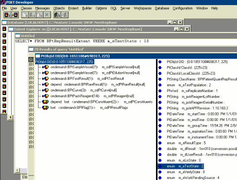
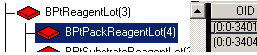
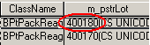

Software Error Troubleshooting (Access 2)
Purpose
This procedure provides a central location for some known software issues and troubleshooting guidelines for problem resolution. This document is updated as new issues or resolutions are identified. Links to recommended recovery procedures are included or workaround instructions are provided.
General Tips
General suggestions for perceived software-related issues:
- Large databases can cause slow response times within the user interface. Configuring the Auto Delete feature for database size management can improve response times for future service events.
- For database issues that these procedures do not resolve, attempt to document as many of the steps or details to reproduce the failure if possible. File a CF.
- If the steps in this procedure do not resolve the reported problem, attempt to restore the database from a known good backup or perform a MFG Cleanup (all punctured reagents must be discarded following a MFG Cleanup).
Assertion Errors
| Assertion Error | Description | Resolution |
|---|---|---|
| Bassert Event = ITubeScanCount | The user interface exits with an MFC exception error when accessing the Sample Manager window.
A tube on a rack has an invalid status. |
Delete the rack from the database. Refer to Unlocking Sample Rack (Access 2) procedure. |
| Assertion error (supplies): An event log might not be present.
BAssertEvent - BAccessSubstrateTask |
The system displays Running, but does not aspirate samples. Completion times scroll forward.
Note: This error occurs when the instrument supply counts do not match the console database (invisible supply wait).The resolution resets the supply status or counts in the instrument and the console database.
|
|
| Assertion error 'exp' in file C:\NexStep\IUnstrument\AmpLibrary\src\ampmsgs.c | Instrument error, cause unknown. | Reboot the AU. |
| BAssertEvent(pSampleTube != NULL) | An in-progress sample tube is missing information. | Change the status to something other than in-progress
OR Use this OQL search to find the in-progress samples.
 |
| BNexStepUIApp.cpp, BNexStepDb
An error occurred initializing the NexStep database, A factor does not belong to the dictionary branch of the version tree. |
The error occurred during an APF update. | Reorganize the database.
Note: Refer to the
Software: Database - Reorganizing Database procedure.
|
| Debug assertion failed, Program: C:\NexStep\PC\Bin\NexSetuUIUD.exe
File: afxwin2.inl, Line:39 |
This error can occur when configuring the internal bar code reader in the Not Ready mode. |
|
"Debug assertion Failed, Program: C:\NexStep\PC\Bin\ DBMaintenanceUD.EXE, File: afxole.inl, Line: 224 |
This error is caused by the Database Maintenance program. The automatic start time is one hour after the scheduled backup time. If the backup is set to 23:00 (11:00 PM), then the Database Maintenance program tries to run at 24:00. The system clock counts 00:00 to 23:59. 24:00 is an illegal time. | Do not set the backup time to 11:00PM. |
"Debug assertion Failed, Program: C:\NexStep\PC\Bin\ ReduceUD.EXE, File: afxcoll.inl, Line: 156 |
Debug assertion popup and Win32 in event log.
Caused by missing spaces in the text of the reflex conditions entered by the customer. |
Add a space before and after any conditional values in the reflex test conditions text like OR or AND.
Example: Reflex Test FT4 TSH<=0.35 'space' OR 'space' TSH>=5.0 |
Database Errors
| Database Error | Description | Resolution |
|---|---|---|
| BEvent::Log( ) failure, Err = -2099 | Displayed when attempting to launch the user interface, also when attempting to run DBTest. Probable cause was numerous unexpected PC shutdown events. | Reorganize the database.
Note: Refer to the
Software: Database - Reorganizing Database procedure.
|
| BNexStepUIApp.cpp
BLXiAccessDb An error occurred initializing the LXiAccess database, One of the database files has an inconsistent time stamp. |
Message during user interface launch | Reorganize the LXiAccessBase database on the Access2i.
Note: Refer to the
Software: Database - Reorganizing Database procedure.
|
| Critical Event Failure:
BNexStepAccessEventSink A database error (code = 2017) occurred Database Error BAccessRackLoadTask BMaintenanceRequest.cpp 3x BPTCurve.cpp |
Critical events are sent to the PC from the AU. The error message also includes a Count field.
Root Cause: An inconsistency in the database. |
Refer to the Count field in the event log details.
|
| Database error (code=-2026) occurred: The index value could not be found. | A database object is corrupt. Potential root cause: PC shutdown during communication between the PC and AU. | Reorganize the database.
Note: Refer to the
Software: Database - Reorganizing Database procedure.
|
| MFC Exception,
A database error (code = -2041) occurred. An attempt was made to lock an object or a class that is locked by another user. |
Two processes are trying to modify the same data. The second process waits for the first process to finish and then store its changes, but an event is posted and the user interface exits. The error message also includes a Count field.
Console PC on V3.3.1 or higher software are more likely to have this error, as much more data is processed for each assay. |
Refer to the Count field in the event log details.
|
| MFC Exception, IM POET,
A database error (code = -2025) occurred. The object buffer for this object seems to be corrupted. |
This failure occurred (once) because of an LIS Broadcast request indicating that an object involved with this failure is corrupt, no database corruption is generated. This error seems to be a transient event causing an MFC Exception (on the -2025 error), but does not cause any loss of data or operation. | This error is a benign error. No action is required. |
| Inconsistent database object (BPtCalibratorSample)
(BPtControlSample) |
This error message can be posted to the event log by the consistency check. The inconsistency can be created during normal deletion of a calibrator lot, or control lot | This error is a benign error. No action is required. |
| Inconsistent database object (BPtMaintenanceRequest)
(BPtPatientRequest) |
This error message can be posted to the event log by the consistency check. | This error is a benign error. No action is required. The error might be cleared by running the consistency check again.
The request can be deleted manually from the database using these steps.
|
| Inconsistent database object (BPtPatientSampleTube) | This error message can be posted to the event log by the consistency check. Potential root causes:
|
This error is a benign error. No action is required. |
| MFC Exception, Database error (code = -2611) occurred: The data record has an incorrect checksum. | A database object is corrupt. Potential root cause: PC shutdown during communication between the PC and AU. |
|
| Recovery is enabled (cannot reorganize).
Occasionally the user interface does not launch, and reorganize, dbTest, etc ... produce the specific error message containing the words Recovery is enabled. |
The recovery database has a corruption.
Message traffic goes from the instrument into the recovery database and then into the main database. After the message is received correctly, the main database prompts the instrument to delete each message and send the next one. |
|
General Errors
| General Error | Description | Resolution |
|---|---|---|
| System Check, and maintenance assays have dark count errors or randomly bad results. Non-maintenance samples are OK. | The UI language was changed and the language affects maintenance rack sample scheduling.
The language causes the software to fail to recognize the rack as a System Check rack and does not setup the tests correctly or run the correct replicates out of the correct SVs. |
Restart the PC or UI following a language change.
Note: When rebooting the Privacy & Security compliant Windows 8 PC, you must enter security password "Access2Admin" when prompted to launch Windows.

|
| SYS errors on all samples after updating software | The analytical unit might not have been rebooted during the installation so that the updated AU software was not launched. | Reboot the AU. |
| LXi CTA communication. Parameter invalid. Details ... Message ignored Function: RxMsgHandler _RL_Unloaded Parameter: strMsg Invalid Value: M|4|N.
Automation AV command failed with details Attempt to load or unload an AV failed: AU-system error: 4B013 Automation command processing failed with details Automation task failed to process command from CTA: AV FAILED |
Possible causes:
TIUS #FYI2010B021 has more information about this error, when the error is associated with a software install. The error does not stop the system but can put the CTA communication offline. |
|
| Backup never completes or fails with a file copying error. | A corrupt file was found during a file copying action. Corrupt files can be identified by attempting to copy or delete them. Some files might not be accessible because they are in-use. Exiting the user interface and shutting down the poet server application releases the database files. | Identify the corrupt file in the nexstep directory and delete it.
Run check disk, if the file cannot be deleted.
|
| Cannot delete calibrators or QCs. The checking for running or paused instruments operation fails. | The nvsetup.csv file on the AU is missing or corrupt. The software is unable to retrieve the AU serial number and confirm that the system is not running samples before deleting result-dependent data. |
Restore the nvsetup.csv file from backup.
Note: Refer to the
Restoring Instrument NVRAM procedure.
|
| Can't execute tmode when logging into telnet and the dir command does not work in the telnet or cmd/ftp connection to the AU. | Caused by incorrect CPU CMOS setup. | Review CPU CMOS setup. Confirm that the HDD settings are correct and the AT bus clock is set to 7.19 mhz.
Note: Refer to the
Configuring CMOS on AU CPU PCB procedure.
|
| The Console Can't Connect to the Server error popup when backup is requested. Followed by The Following Instruments are Running or Paused: XXX (no serial number listed). | The nvsetup.csv file on the AU is missing or corrupt. The software is unable to retrieve the AU serial number. | Restore the nvsetup.csv file from backup.
Note: Refer to the
Restoring Instrument NVRAM procedure.
|
| Physical Memory Dump.
The text of the window displays the name of the process or program that crashed in the last line of the upper section, for example, mga64.dll (video), pcAnywhere. BSOD - Blue Screen of Death. |
Possible causes:
The printer comes with an installation software CD in the box. Do not use the CD. Installing the Okidata software can cause the system to crash. All the files required to install the printers are resident in the PC. |
For Winodws XP Console PC Only
|
| Software Data Formatting Error in the event log following the Run Completed message. Details: EOF found. | The AU nvsetup.csv file is corrupt. | Replace the nvsetup.csv file in the AU with a good copy.
Note: Refer to the
Restoring Instrument NVRAM procedure.
|
| Software file accessing error message generated at each power-up initialization. Various devices do not move (pipettor, shuttle, carousels). Details: Error opening device descriptor: /up, Error: 175 | Caused by an incorrect Access Base ultrasonics PCB installed in an Access 2. |
|
| Status Controller initialization error.
Typical errors: statinit Error attempting to copy .. nexstep/drw/nvsetup.csv to ../drw/nvsetup.csv.bak Error attempting to store ../drw/nvsetup.csv |
If alignments do not save or statinit or NVRAM error messages occur, then the nvsetup file could be corrupted or locked. These problems are likely the result of a failing hard drive. The nvsetup file can be unlocked, restored, replaced, or edited using this procedure. | Replace the nvsetup.csv file in the AU with a good copy.
Note: Refer to the
Restoring Instrument NVRAM procedure.
If the error continues, then corrupt nvsetup.csv.save or nvsetup.csv.tmp files can also be contributors to this error. Rename these files to rule them out as a cause. Note:
|
|
System initializes to Ready, but:
|
Corrupt file on the AU hard drive. | Perform the Reload Instrument Software step in the Clear Jammed Critical Events procedure.
Note: Refer to the
Clearing Jammed Critical Events procedure.
|
| Terminator record missing in LIS message. The event is posted each time the user interface console initializes or the host is queried. | The LIS transmission index is corrupt. The transid.dat file in the DRW folder is looking for an incorrect or lost LIS message.
The LIS message files are saved in the C:\ directory. Normally, each message is deleted when its data is saved to the database. |
|
| There was an error in communication between the PC and the instrument. Reboot the PC. Occurs when launching the user interface. | Occurs when the user interface cannot identify the instrument serial number. The nvsetup.csv file on the instrument hard drive could be missing or corrupted. | Replace the nvsetup.csv file in the AU with a good copy.
Note: Refer to the
Restoring Instrument NVRAM procedure.
|
|
Unknown signal received 23130 Code: 710016, Process: PollRpt(9) Unknown signal received |
The software sometimes receives a signal after it has stopped waiting for it and then does not recognize the signal. If the signal was required, an error event saying that the software failed to receive the signal would have occurred. | This error is a benign error. No action is required. |
| Windows could not start because the following file is missing or corrupt: \WINNT\SYSTEM32\CONFIG\SYSTEM HARDWARE Profile / Last Known Good Menu. | This message is displayed when both the system configuration file and its backup have been corrupted on the hard drive. This message could be caused by powering down the PC without shutting down Windows. |
For Winodws XP Console PC Only
|
| Internal stack overflow
system halted |
Motherboard RAM error. This error happened once when reimaging a PC. | Reseat or replace the RAM memory card on the PC mother board |
Initializing or Not Ready Errors
| Initialization Error | Description | Resolution |
|---|---|---|
| After launching the user interface, the instrument status display at the upper left corner of the monitor does not transition from the red (No message, Not Ready, or Initializing) status to either the blue Ready or to the green Running status.
The system appears to be stuck "initializing forever ". The system is locked up with a Resetting Sink Events popup on top of the user interface. |
The Windows XP firewall might have been enabled. A ping to the AU works, but the AU does not communicate to the user interface.
Possible causes:
Note: Attempts to select
Initialize when in this condition, can cause the message
Instrument initialization is in progress..., but the instrument does not initialize.
|
Clear jammed critical events.
Note: Refer to the
Clearing Jammed Critical Events procedure.
Windows 8 system,
Windows XP system, press the Windows key, select , and set the Firewall to Off. |
| Access 2 workgroup communications error.
(The details for this event can include An error occurred in the Workgroup Communications: Socket connect failed.) |
This event is posted when a command is sent from the user interface and the instrument does not respond. The event usually follows the Idle Timer Expired: No communications received from instrument event. A loss of communications with the AU occurs. |
|
| An error occurred in the Workgroup Communications: Socket connect failed. | The PC could not communicate with the AU during launch of the user Interface. The message occurs after PC boot up.
This error popup window can occur when launching the user interface. No event occurs in the event log, because the user interface does not launch |
For Access 2i:
|
| Idle Timer Expired: No communications received from instrument (event repeats every two seconds in the event log). | When the event repeats every two seconds, the user interface is querying the AU and a corrupt file on the AU hard drive is locking up the communications. |
|
| Idle Timer Expired: No communications received from instrument. | The PC lost communications with the AU during operation. This loss of communications can occur in any mode (Not Ready, Ready, Running, or Paused).
Also, this message is posted whenever the AU is rebooted while the user interface is active. Sometimes the system recovers without intervention. |
|
| All instrument motors are disabled (even after rebooting the AU) and the UI Diagnostics functions are not available (initialization in progress). | Caused by selecting Disable All Motors and then exiting the UI. Cannot get back into Diagnostics to enable the motors. | Move the Incubator belt out of the home position and reboot the AU to enable the motors and proceed with initialization normally to Ready or Not Ready. |
Installation Errors
| Installation Error | Description | Resolution |
|---|---|---|
| An error occurred in the move data process. | The database was not updated at the end of the software installation. | Shut down the Poet or Fast Object server during software installation.
|
| An error occurred during the move data process: -115 ... AUMessagesUD.dllprocess. | This error is seen when trying to load Access2 software into an LXi or DxCi a second time. |
Caution: Do not load Access2 stand-alone software into an LXi or DxCi. The correct integrated software version contains an "i". Example, i5.2.02 is integrated software.
Load the correct LXi software. Refer to the Access 2 Software Recovery procedure in the LXi 725 Service Manual. |
| Entry point error, file xxx.dll not found. | The software version that is loaded is lower than the database version that is used following a database restoration. | Load the latest version of system software to update the database. |
| Software installation failure.
The AU software load stalls or fails at 99% complete. |
At the end of the AU software load, the process attempts to retrieve a copy of the nvsetup.csv file from the AU. If the file is corrupt or not present, the installation does not complete. |
|
| Software installation failure.
The AU software file transfer stalls or fails at 99% complete. 99 percent |
Transferring the .tar files to the AU does not complete because of
|
For Windows XP System with an older CPU PCB (486 DX4-S - short PCB and below),
For Windows 8 or XP System with newer CPU PCB (IOWA - short with a blue HDD connector and above),
|
| APF load error.
Warning: If the system software version is less than V2.8, then the APF revision can display the new revision number but the APF might not have been updated if this error occurs during the APF load. This APF revision update issue is resolved in software V2.8 and higher.
|
A database problem is preventing the APF update from completing.
Possible causes:
|
|
| System is not an Access 2. Please ensure that you are using the correct installation disk for your system. Exiting. | The software install program detects a DxI folder on the PC. The system checks for the presence of C: NexGen\|Console. A normal Access 2 PC has a NexStep folder, but not a NexGen folder. | Confirm that this PC is connected to an Access 2.
|
| System configuration invalid. Please ensure that you are using the correct installation disk for your system. Exiting. | The software install program detects an LXi folder on the PC. The system check for the presence of C: NexStep\PC\DRO\LXiAccessDict. A normal Access 2 PC does not have an LXiAccessDict folder. | Confirm that this PC is connected to a stand-alone (not an integrated) Access 2.
|
| Loading apf thermal file failure pop-up message. | This message indicates that the system software cannot find the thermal file on the APF. However, the most effective resolution to this message is to reinstall the system software and repeat the APF install. |
|
| Disk error, or file error during software load or APF load. | The PC is having problems reading the CD-ROM disk. |
|
| Setup.exe - Application Error. The application failed to initialize properly (0xx0000005). Click OK to terminate the application. pop-up occurs during first few minutes of software install. | A process is locking up the PC and preventing the software from installing. |
|
| Select IP Address pop-up where Multiple Network Cards Were Detected | Windows registry issues. | Reimage the PC and reinstall software. Refer to Peripherals: Reimaging Console PC Hard Drive or Re-image Windows 8 Console PC procedure. |
|
Possible causes:
|
For client PCs:
|
|
PC cannot connect to server error message when selecting
.
The server has only client setup features available. |
The software is looking for the database at an incorrect IP address.
A possible cause is the PrimaryConsoleIPAddress is incorrect because of a failed initial software load into the console PC. |
|
| Cannot open Events Database. Poet Error -2077. The dictionary time stamp does not match the database time stamp. | Possible causes:
|
Load the latest software version. |
Printing Errors
| Printing Error | Description | Resolution |
|---|---|---|
| An attempt was made to access an unnamed file past its end. | The store flags.txt file is corrupt. The system does not print. |
To correct printing errors, refer toTshoot Printing Problems (Access2). |
| BNSPRNTDLG.cpp,
BPrintJob.cpp, BPtPrintJob.cpp A database error (code=2202) occurred: PtObject::Deelete(PtFLAT, pULSpec, pUWSpec) Unknown error. |
This failure has been attributed to unexpected shutdown of the POET Server. After experiencing this failure, attempting to print a report causes the described database error. |
|
| GetNamedAU BAssertEvent
NSPRNTUD, NSPRNT.cpp |
Occurs when attempting to print and nothing prints. The user interface is attempting to print to a printer that no longer exists in Windows. Can occur after a database restore. | Choose or set a default printer in Windows, then choose a printer form the list. Select . |
| Report Could not be printed:
Cannot open SQL Server.
An SQL server error occurs when trying to print from the UI. Windows printer test pages print OK. |
The user interface is trying to print to a printer that does not exist. The issue is thought to be created by selecting Print screen following a database restore, where the printer selected in the user interface does not exist on the PC. |
|
| Reports sporadically do not print. | Requested reports seem to be sent to the printer, but about 20% of the selected reports are not printed. | Confirm the correct printer driver set-up in Windows and the user interface.
|
| Seagate crystal reports database error |
No reports are printed. Double quotes ( " ) included in the Report Header Information section of the Reports Setup screen is a cause of this issue. Single quotes ( ' ) do not cause a problem. Replace double quotes with single quotes or remove all quotes from the information fields. A forward slash "/" causes the same error. |
Correct the printer errors.
Note: Refer to the Refer to
Tshoot Printing Problems (Access2)procedure.
|
| The customer is experiencing slowed UI response on a Windows XP system.
Unknown process running popup for LMAB when launching the UI. |
Do not load the Lexmark printer manager application that comes on a CD found in the Lexmark printer box. Our XP embedded software does not have some processes the printer manager software tries to use and the printer manager locks up the PC trying to find the missing processes.
|
Check for a green icon near the clock at the bottom right corner of the Windows desktop. If the green icon is for the Lexmark printer manager application, then:
|
Test Request Errors
| Test Request Error | Description | Resolution |
|---|---|---|
| Database error: BCheckWorkPendingThread.cpp
The object buffer for this object seems to be corrupted |
Occurred while manually programming a sample.
LIS download is conflicting with manual entry for database access. |
Select Ignore several times and the messages should clear. |
| Fluid type could not be updated.
(A common error for a QC run a patient sample through the CTA on LXi systems) |
Caused by the lack of a fluid type on the initial sample request. The system automatically assigns SERUM. A subsequent request for the same sample ID without sample type assigned causes the error. |
|
| Fluid type not supported | Caused by the lack of a carriage return <CR> following the sample type SERUM in the LIS transmission. | Correct the LIS programming. |
| The instrument received the request but did not respond. | The sample is loaded and run is pressed. Status displays, Checking Supplies - Prioritizing Tests - Estimating Completion Times -
Error popup The instrument received the request but did not respond. |
|
| LXi: LIS error message: No test scheduled for automation run and Automation run command received with no tests scheduled. | Samples are loaded into the Access from the CTA but no tests get assigned to the samples via the LIS. |
|
| The system cannot run under the current conditions. | Calibration request does not run.
System Check does not run. |
Confirm that all required cups or tubes are loaded and detected in the sample rack.
Note: On a calibration rack a;; of the tubes must be the same type. The tube detector (3 sensors: bottom, middle, and top) must see that all the tubes are the same type. Can be caused by tubes not being pushed down completely into the rack.
|
| System status goes to Running, but samples are not aspirated and the completion time keeps advancing. | Invisible supply wait. The waste bag or substrate counts stored on the instrument do not match the counts stored in the database. Almost always happens after restoring the database. |
|
| The requested task is unavailable because of a conflicting operation | If a task is in-progress when the instrument looses communication to the PC, then sometimes the database is waiting for a response that is not possible and is not able to proceed to another task. | Restart the PC.
Note: When rebooting the Privacy & Security compliant Windows 8 PC, you must enter security password "Access2Admin" when prompted to launch Windows.
|
| Unable to get record, Reagentinfo | Occurred while attempting to run QC at the same time the end of run assay was beginning, cause unknown. | Operator pressed run again and the requests ran without incident. |
| Unable to reserve devices for the operation | Popup error message seen on a client user interface after loading a rack to run. | Reload software into the client PC only. |
| Utility assay does not complete. No error present. | The system transitions into Running the Utility Assay, but never finishes. The completion time stays the same and is exceeded. |
|
| The wrong assay is assigned to a reagent pack when loading.
This error can be caused by lot number reuse by manufacturing or by incorrect manual entry of a pack bar code. |
The assay type for a reagent lot is controlled in the database by the lot number. All packs for a lot number are assigned the assay identified for the first pack loaded with that number. | Delete the lot number and the pack from the database, so that the packs reload with the correct assay assigned.
  |